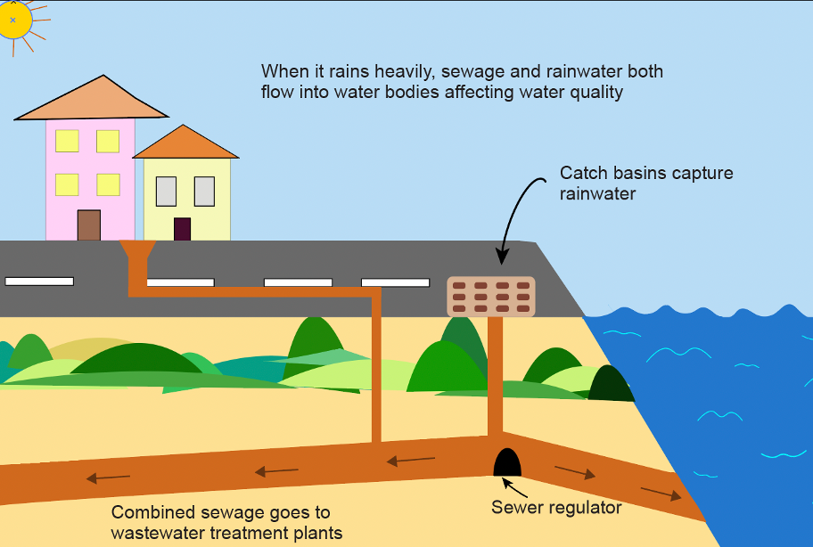

The answer isn’t straightforward
Jamil Aziz, a life-long New Yorker saw the tragedy firsthand when superstorm Sandy raged through his
neighborhood almost a decade ago.
“Water was out. Lights were out below 40th street for what felt like two weeks,” he said. The wind was
alarming, unlike he’d ever experienced before, he said. “People taped up windows to protect from the wind.”
When Sandy hit, he also saw the local Con Edison power plant explode.
“The sky lit up green up for five seconds or so and there was a loud boom and then all lights went out in the
neighborhood,” Aziz said. “We live a hop, skip and jump away from the Atlantic Ocean, right in mother nature
… Sandy showed how we’ve to respect mother nature.”
The hurricane killed 44 city residents and caused an estimated $19 billion in damages and lost economic
activity, according to data from the city. It destroyed over 300 houses in a span of mere 48 hours. Millions
in the city spent days after with no power supply and running water.
Aziz saw apartment buildings’ lobbies get flooded, friends lose cars and other belongings.
“There were cars floating like rubber duckies on my street … But you know, things like that, as disruptive as
they are, they bring the city together,” he said.
Year after year since, New Yorkers have been complaining about urban flooding ravaging their streets, subway
stations and even basement apartments, damaging personal property. New York has the most number of people
living in high-risk flood zones, compared to other cities in the country, according to data from the city.
This means that the number of New Yorkers living in the city’s floodplain is higher than the entire
population of other major cities like Cleveland, Ohio and Tampa, Florida, according to data from the city.
Since 2012, city’s residents have lodged 309,830 flooding and sewer overflow complaints to the city,
according to the city’s 311-complaints’ database. Three-one-one is a residents’ hotline used to report
non-urgent problems. For flooding and sewage related issues, the complaints are routed to the Department of
Environmental Protection.

Number of 311 complaints about street flooding
Calling in for a complaint can take anywhere between 12-15 minutes depending on the hold-time. Complaints can
also be filed online by filing out a simple form.
Most complaints have always come from Queens and Brooklyn. More narrowly, the single neighborhood with the
most complaints filed is Great Kills neighborhood in Staten Island. Since 2012, there's been an increase of
nearly 22% in the number of complaints filed in the neighborhood. Most of these complaints were about
sewer back up, catch basin and street flooding. In February last year, the city reported completion of a $48
million project to upgrade sewers and water mains in the neighborhood.
The neighborhood with the second highest number of
complaints is Jamaica in Queens. Overall, in over 5,000 instances, the city found that flooding conditions
were caused by excessive rain.

Queens and Brooklyn recorded the highest number of urban flooding-related complaints each year
since 2012
Number of flooding related complaints
Data source: NYC Open Data
The annual rainfall in New York City is about 1,270 millimeters, or 50 inches, according to the National
Weather Service. The average number of days it rains in the city is 134, according to data cited in the
study. Sea level in the city has risen at least a foot in the last century, according to the city.
Urban flooding doesn’t just cause damage to property; in a city as fast-paced as New York, it also disrupts
movement causing loss of work hours and wages. About two thirds of the city is covered with concrete, making
it highly vulnerable to overflowing streets and urban flooding. As cities have grown, they’ve added a lot of
impervious surfaces, exasperating flooding, Richard Norton who specializes in urban and regional planning at
the University of Michigan, said.
But, there’s no magic threshold for how much concrete surface is too much for a city.
“It’s not easy to say 25% or more concrete cover is problematic,” Norton said. “People have to live
somewhere. If people live in more compact surfaces, on a per capita basis there’s acutally less impervious
surface.”
If New Yorkers lived on single-family lots, they’d cover a lot more impervious surface, he added, explaining
the need for adding more green infrastructure in tandem with urban planning.
The easiest low hanging fruit, which is what the city is already doing is building more green infrastructure,
Norton said. “But, it’s usually disruptive to life as it is.”
To tackle urban flooding head on, the city has some plans to soak up the rain — whether these steps are
enough or not has residents and experts divided.
Through various other city programs, including the Bluebelt system, the city is trying to improve its
drainage. The Bluebelt system drains 16 watersheds located at the island’s southern end impacting nearly
10,000 acres of land. Now the city has a new way of tackling the problem. One that involves shifting some of
the burden on private property owners.
In February, the city added another tool to its armor by implementing a new stormwater ruling requiring newly
developed or redeveloped properties to manage stormwater on site. The new program’s impact remains to be
seen, but advocates such as Amy Motzny, a senior planner at the Gowanus Canal Conservancy are hopeful of its
merits. The conservancy is a non-profit group that advocates for clean water for the neighborhood, among
other things.
Multiple stakeholders — various city agencies including the Parks Department, advocacy groups, Department of
Environmental Protection, Department of Transportation are involved in improving the lives of NYC residents,
by building green infrastructures.
The idea is to make the city’s surface more permeable by adding more green infrastructure. On a day when the
sun is out, it’s easy to dismiss rain gardens as uncontrolled weed growing at intersections, often jaded
with trashed pizza boxes, fruit peels and stray plastics.
There’s signage, sometimes hidden by tall grass, other times visible, but not immediately clear. These rain
gardens and bioswales are part of the city’s green infrastructure — built to prevent the city’s streets from
flooding.
The initiative to paint the city green began in 2010 with a $1.5 billion commitment from the then-Mike
Bloomberg administration. The idea was to capture street runoff and excess sewage preventing it from
entering the city’s waterways.
Since the program’s inception, the city has built over 10,700 green infrastructures— most of them being in
Queens and Brooklyn.
“At the point where we’ve sited all we can … We’re looking for alternative ways to put in more green
infrastructure,” Nyleen Euton, green infrastructure grant program manager said.
The 311-complaints filed by New Yorkers are one of the factors that help determine the location of these rain
gardens. Other factors include frequency of sewage overflow, local bedrock and soil conditions, according to
Euton.
The Gowanus Sponge Park is one such attempt. But there are plenty of challenges to be dealt with, including
rapid rezoning of the area — building apartments on flood-prone areas, constant maintenance work required on
rain gardens and invasive plant species growing on these rain gardens.
Last year, the city was reminded of Sandy woes when Hurricane Ida hit, bringing in a little over eight inches
of rain. It disrupted the city that otherwise never sleeps. The flash flooding and rain killed at least 42
people — 13 in the city, most of them in basement apartment units.
Ida brought enough rain in just one day to almost completely confine the 305-foot-tall Statue of Liberty. It
was also the city's fifth wettest day since 1869.
While Ida was a hurricane, flash floods are becoming increasingly common. In 2021, there were 10 flash-flood
warnings issued for the city, according to data archived by Iowa State University. That’s the highest it’s
been since 2006, the earliest available year in the dataset. The National Weather Service defines a flash
flood as one caused by excessive rainfall in a short period of time, generally less than 6 hours.
The streets near the nearly 2-mile-long Gowanus Canal in Brooklyn for instance, are prone to flooding with as
little as a few inches of rain. Joseph Alexiou, a Gowanus resident and journalist who has authored a book on
the canal blames real estate development in the area for the problem.
“They can try to improve sewage all they want, but until we keep building on flood-prone streets, we’re not
really solving the problem,” he said. “It’s like trying to stop a whole pitcher of water with a tea spoon.”
Urban flooding is also not just limited to extreme weather events, according to Norton.
“Most places in North east and the Midwest are experiencing increased rainfall,” Norton said. “There are
shorter, heavier bursts, rather than longer drawn-out rain events and most cities don’t have the
infrastructure for it.”
“Flooding has been getting worse because of climate change … add to that, there’s been more severe weather
events lately,” Shino Tanikawa, the executive director of NYC Soil & Water Conservation District, said. The
organization is a government body that works in partnership with the city’s DEP and Parks and Recreation
department.
The city’s need for infrastructure upgrades isn’t a first.
The city was built for the convenience of Dutch traders, Aziz who is a tour guide in the city said. A lot of
real estate has elevated structures because ships would come up to the shore. As the city has grown, this
has meant increased flood risk, he added.
Back in the early 1830s, New York City stunk so bad, it is said, that travelers could sniff out the city as
far as six miles away. Diseases, contamination and poor waste management all contributed to prompting the
city to address its fresh water problem.
Flash forward two-hundred years, the city is in need of an infrastructure renaissance. This time to deal with
the ongoing climate crisis and increasingly more frequent extreme weather events. However, the simple
sounding cocktail – adding more green spaces and improving sewage flow — involves plenty of challenges. It
would involve tearing down pipes and rebuilding sewage lines and streets to better manage overflows.
The city’s current wastewater management system is built to combine domestic sewage with overflow from
streets. And, the city is actively trying to separate the two sources of sewage. About 40 percent of the
city is now served by separate sewer systems, Euton said.

When the system is overwhelmed, wastewater from both homes and street runoff get combined and enter the
city’s waterways, as it often happens in neighborhoods surrounding the Gowanus Canal, according to Motzny.
The city is working to separate sewage wherever possible, she added.
“We’re also suffering from legacy pollution … Hundred years ago common practice was to put waste into the
river. Now we have the added problem of storm water overflow,” Tanikawa said.
Steven Cohen who has taught public management and environmental policy at Columbia University for four
decades argues about the efficiency and feasibility of major infrastructure upgrades.
Sewage system upgrades of course, come with costs.
“Our sewer system just wasn’t created to deal with the amount of rain we get now,” he said. “Eight or nine
out of ten rain events won’t overwhelm the system so much … But, the two or three that do overwhelm the
system and push out a ton of sewage.”
“The city’s sewer system itself is old and there’s not much you can do about it,” he said. “It’s probably
better to look into storing water at this point.”
“Like any island if there’s any storm during high tide, you’ll get flooding. New York is a city that will
have more flooding events,” Cohen said. A simpler solution, according to Cohen, could just be to move people
and utilities out of basements into upper floors.
Norton agrees. The most effective way is to take people out of floodplains and turn them into parks and
reservoirs. And, that by definition is disruptive, he said.
“Until we do make major changes however, we’re not going to solve anything and will just be gambling on the
next rain event,” he said.